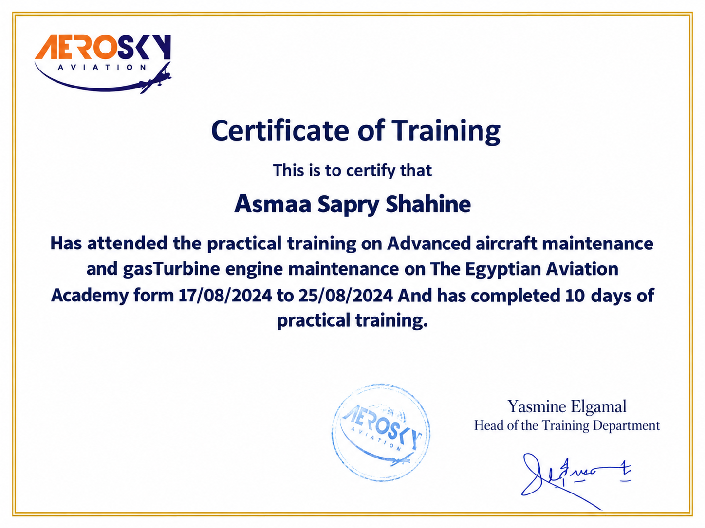
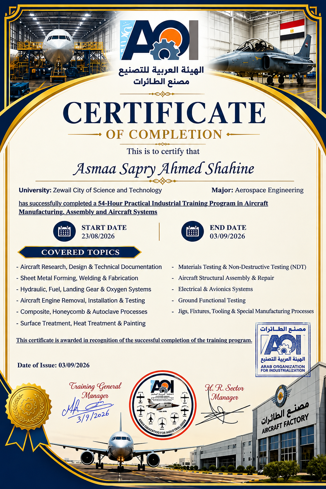
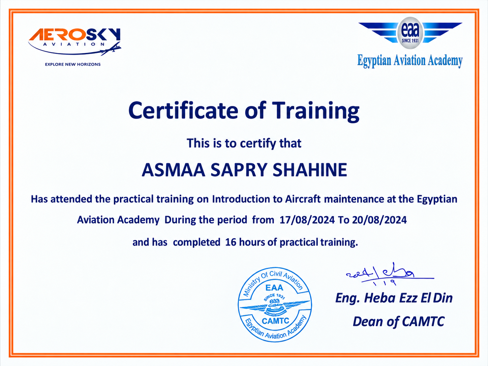
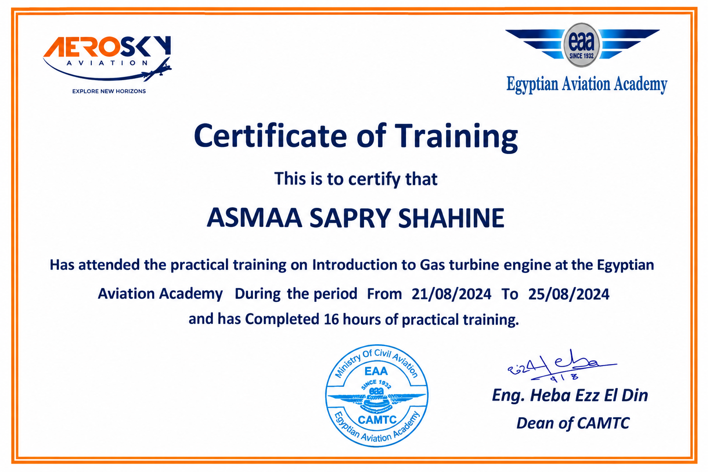
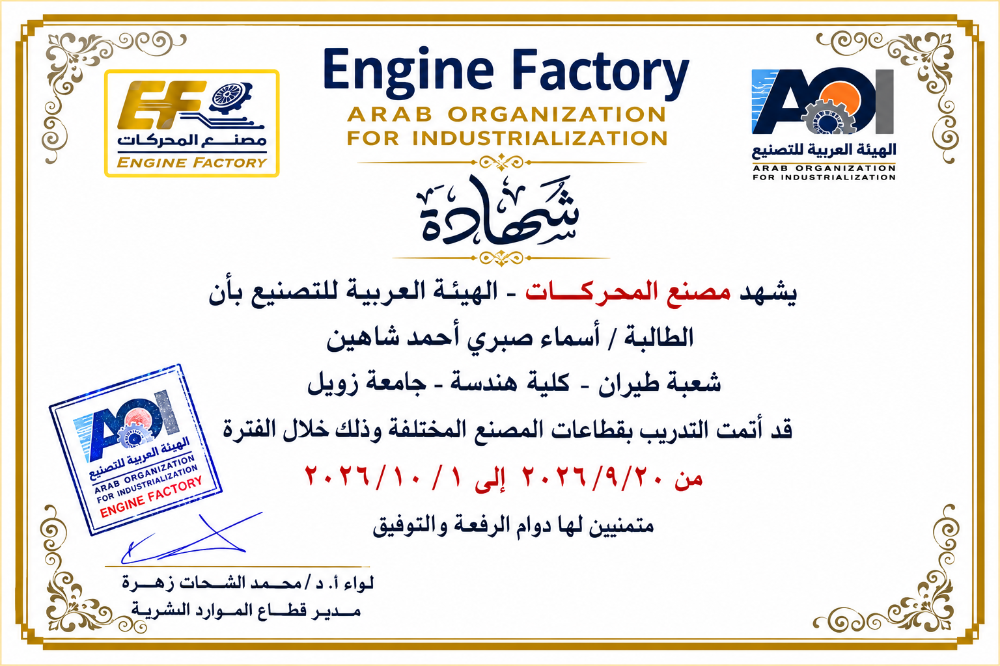
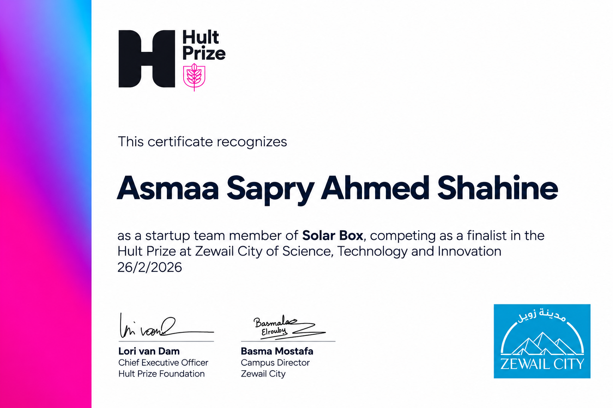
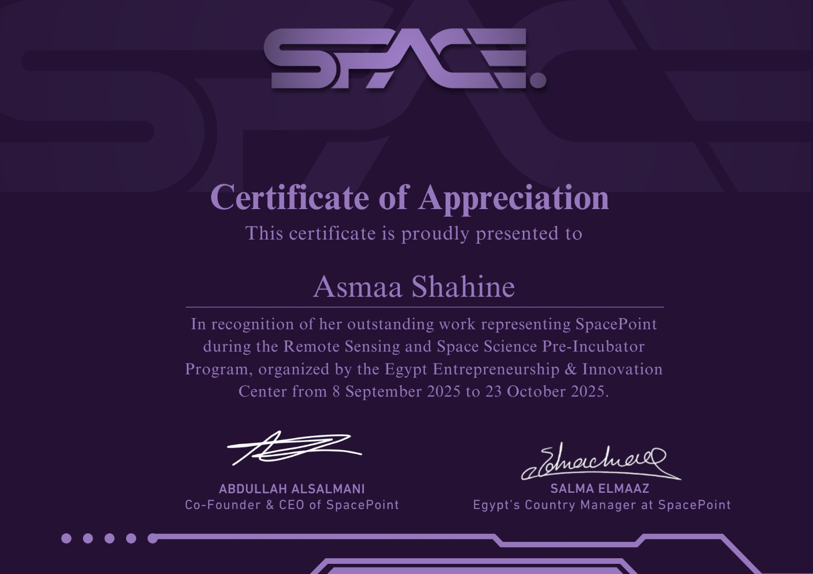
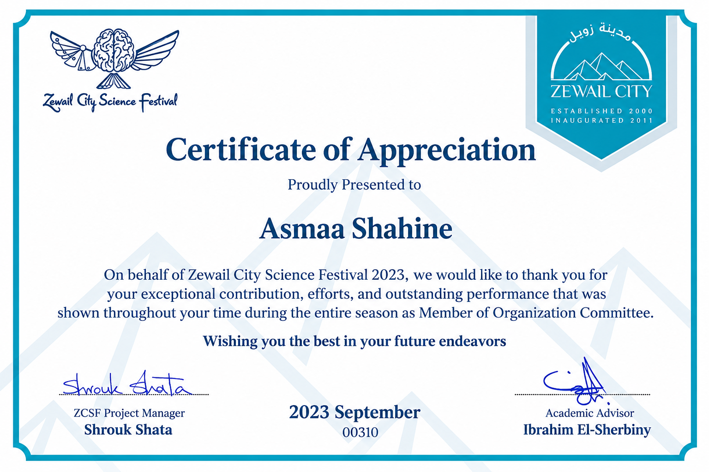

3-DOF Robotic Manipulator
Designed, simulated and fabricated a three-degree-of-freedom robotic manipulator, integrating kinematic modeling, CAD, additive/subtractive fabrication and microcontroller-based motor control.
I'm Asmaa Shahine, an Aerospace Engineering undergraduate at Zewail City for Science and Technology (expected graduation June 2027). My work spans UAV design, flight dynamics, control, robotics and computational engineering.
I'm pursuing a BSc in Aerospace Engineering and a minor in Artificial Intelligence at Zewail City University of Science and Technology in Egypt. I am particularly interested in aerodynamics, aircraft stability and control, unmanned aerial systems and aerial robotics.
Multirotor UAV with a robotic arm for non-destructive inspection of industrial structures. The project is ongoing; inspection performance is not yet claimed.
Read project details →Selected projects from aerospace design, autonomous systems, CFD, robotics and computational control. Individual pages summarize documented work; original drawings and results can be added later.
Designed, simulated and fabricated a three-degree-of-freedom robotic manipulator, integrating kinematic modeling, CAD, additive/subtractive fabrication and microcontroller-based motor control.
Developed and tested a four-axis CNC hot-wire foam cutter using Arduino, GRBL, TB6600 stepper drivers and G-code to produce airfoil profiles. Includes hardware photos, laboratory videos, and technical report.
Developed a MATLAB potential-flow model to study Joukowski airfoil geometry, streamlines and pressure distribution. Supplementary ANSYS Fluent simulations illustrate velocity fields and pressure contours.
ANSYS Fluent thermal-fluid study of a turbine blade with internal coolant passages, examining the mesh, velocity, pressure and temperature fields.
Python and Tkinter FrozenLake agent comparing BFS, UCS, DFS, DLS, IDS, Greedy Best-First Search and A* search.
ANSYS simulation of a curved pipe, investigating velocity redistribution, pressure contours and secondary-flow behavior.
Completed a preliminary aerodynamic and structural wing design, comparing NACA airfoils using XFLR5, developing the NACA 23015 CAD assembly, and evaluating spanwise lift with MATLAB lifting-line theory.
Developing a multirotor UAV integrated with a robotic arm for non-destructive inspection of industrial structures. The work focuses on aerial manipulation, flight stability and inspection-system integration.
Modeled the Lockheed JetStar/C-140 using NASA CR-2144 data, analyzed longitudinal and lateral-directional modes, and designed pitch-angle feedback control in MATLAB.
Designed and developed a fixed-wing UAV from conceptual design through flight testing, including aerodynamic and stability analysis and component selection.
Contributed to a sustainable VTOL urban air mobility concept emphasizing operational safety, noise reduction and environmental impact.
Developed and trained a Deep Q-Network agent for the CartPole control environment using Python and reinforcement learning concepts such as experience replay and reward optimization.
Designed a shaft carrying a V-belt pulley and spur gear, assessed allowable loads, Goodman fatigue and yielding, sized keys, and estimated support-bearing life.
Designed a two-stage wind-turbine gearbox, including gear loading and AGMA checks, shaft fatigue sizing, key and bearing selection, and Autodesk Inventor CAD documentation.
Modeled a quarter-car suspension system and analyzed MATLAB/Simulink responses using state-feedback pole placement and LQR control, with documented plots and code.
Aircraft pitch dynamics and PID controller studies, complemented by experimental DC motor speed and position control.
MATLAB-based analog communication experiments covering AM message signals, modulation index effects and spectral analysis.
Digital PAM transmission and matched-filter detection in AWGN, investigating BER/SER and varying SNR.
Laboratory investigation of free and forced vibration, mechanical response modeling and experimental plots.
Simulated and constructed a rectified, filtered and regulated DC supply using a transformer and LM7805CT; compared the simulated 5.002 V output with the photographed physical multimeter measurement.
A PyTorch DQN agent trained in CartPole-v1 using experience replay, target networks and epsilon-greedy exploration, with report and recorded training results.
Designed an S834 horizontal-axis wind turbine blade in QBlade and SolidWorks, then evaluated aerodynamic performance, structural stresses, and six vibration modes in ANSYS.
Explore project →Designed a MATLAB/Simulink study of matched-filter detection over an AWGN channel, with transmitted signals and BER/SER curves for 2-PAM through 1024-PAM, plus comparisons against theory. Explore all 27 original result figures and technical commentary.
On-site internship in the aerospace and space technology field.
Industrial training at the Engine Factory, September–October.
Industrial training at the Aircraft Factory, August–September.
UAV design, propulsion selection and flight testing.
Aircraft maintenance engineering and gas turbine engine training.
ROTORTHON 2024: Fourth place worldwide as part of a VTOL urban air mobility design team.
AIAA student chapter initiative: Founding member and Vice Chairperson at Zewail City.
Selected certificates documenting aviation training, industry experience, technical involvement, and student activities. Select a certificate to view the original image.








For academic opportunities, research collaboration or aerospace engineering projects: